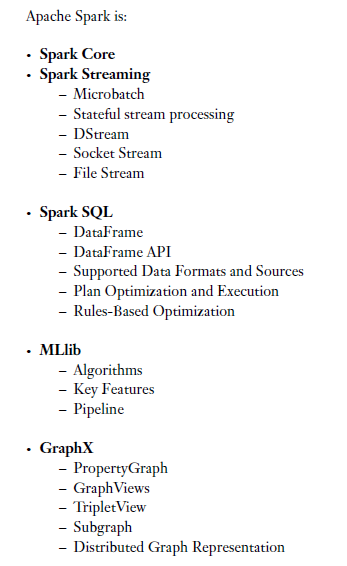
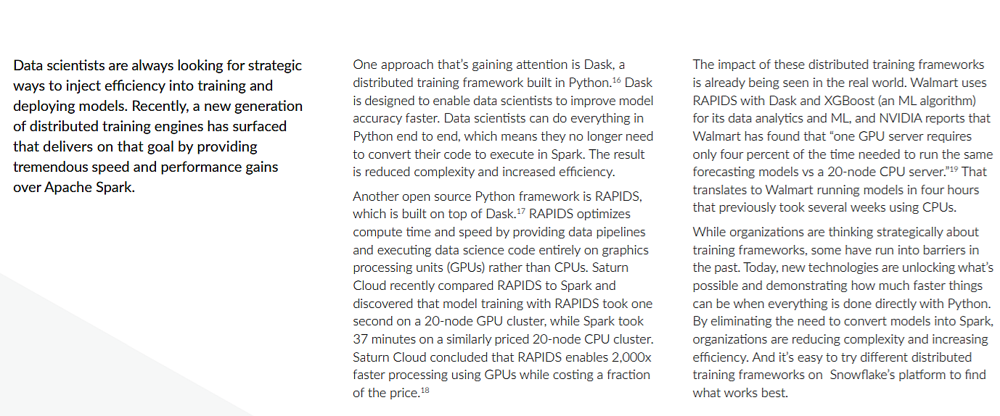

***
←
→
"Map(Shuffle)Reduce"
[(big) data processing 'at scale']
|
Comp. machinery to process large volumes of data
Modern databases store data as key/value pairs, resulting in explosive growth when it comes to number of rows and file sizes.
Traditional, sequential, single machine oriented access does NOT work at all - what is needed is a massively parallel way to process the data.
Note that we are talking about SIMD form of parallelism.
MapReduce
MapReduce is a programming paradigm invented at Google, one which has become wildly popular since it is designed to be applied to Big Data in NoSQL DBs, in data and disk parallel fashion - resulting in **dramatic** processing gains.
MapReduce works like this:
- 0. [big] data is split into file segments, held in a compute cluster made up of nodes (aka partitions)
- 1. a mapper task is run in parallel on all the segments (ie. in each node/partition, in each of its segments); each mapper produces output in the form of multiple (key,value) pairs
- 2. key/value output pairs from all mappers are forwarded to a shuffler, which consolidates each key's values into a list (and associates it with that key)
- 3. the shuffler forwards keys and their value lists, to multiple reducer tasks; each reducer processes incoming key-value lists, and emits a single value for each key
Optionally, before forwarding to shufflers, a 'combiner' operation in each node can be set up to perform a local per-key reduction - if specified, this would be 'step 1.5', in the above workflow.
The cluster user (programmer) only needs to supply a mapper task and a reducer task, the rest is automatically handled!
The following diagrams illustrate this elegant, embarrassingly simple idea.
Summary: "MapReduce is a programming model and an associated implementation for processing and generating large data sets. Users specify a map function that processes a key/value pair to generate a set of intermediate key/value pairs, and a reduce function that merges all intermediate values associated with the same intermediate key."
Since MapReduce involves accessing (reading, writing) distributed (in clusters) data in parallel, there needs to be a high-performance, distributed file system that goes along with it - Google created GFS to fill this need.
GFS abstracts details of network file access so that remote reads/writes and local reads/writes are handled (in code) identically.
GFS differs from other distributed file systems such as (Sun's) NFS, in that the file system is implemented as a process in each machine's OS; striping is used to split each file and store the resulting chunks on several 'chunkservers', details of which are handled by a single master.
WordCount is the 'Hello World' of Hadoop [counts the number of occurrences of each word in a given input set].
Following is the Java code for WordCount - note that it has both the mapper and reducer specified in it:
import java.io.IOException;
import java.util.StringTokenizer;
import org.apache.hadoop.conf.Configuration;
import org.apache.hadoop.fs.Path;
import org.apache.hadoop.io.IntWritable;
import org.apache.hadoop.io.Text;
import org.apache.hadoop.mapreduce.Job;
import org.apache.hadoop.mapreduce.Mapper;
import org.apache.hadoop.mapreduce.Reducer;
import org.apache.hadoop.mapreduce.lib.input.FileInputFormat;
import org.apache.hadoop.mapreduce.lib.output.FileOutputFormat;
public class WordCount {
public static class TokenizerMapper
extends Mapper{
private final static IntWritable one = new IntWritable(1);
private Text word = new Text();
public void map(Object key, Text value, Context context
) throws IOException, InterruptedException {
StringTokenizer itr = new StringTokenizer(value.toString());
while (itr.hasMoreTokens()) {
word.set(itr.nextToken());
context.write(word, one);
}
}
}
public static class IntSumReducer
extends Reducer {
private IntWritable result = new IntWritable();
public void reduce(Text key, Iterable values,
Context context
) throws IOException, InterruptedException {
int sum = 0;
for (IntWritable val : values) {
sum += val.get();
}
result.set(sum);
context.write(key, result);
}
}
public static void main(String[] args) throws Exception {
Configuration conf = new Configuration();
Job job = Job.getInstance(conf, "word count");
job.setJarByClass(WordCount.class);
job.setMapperClass(TokenizerMapper.class);
job.setCombinerClass(IntSumReducer.class);
job.setReducerClass(IntSumReducer.class);
job.setOutputKeyClass(Text.class);
job.setOutputValueClass(IntWritable.class);
FileInputFormat.addInputPath(job, new Path(args[0]));
FileOutputFormat.setOutputPath(job, new Path(args[1]));
System.exit(job.waitForCompletion(true) ? 0 : 1);
}
}
Below are the results of running this on a small two-file dataset.
Input:
$ bin/hadoop fs -cat /user/joe/wordcount/input/file01
Hello World Bye World
$ bin/hadoop fs -cat /user/joe/wordcount/input/file02
Hello Hadoop Goodbye Hadoop
Run:
$ bin/hadoop jar wc.jar WordCount /user/joe/wordcount/input /user/joe/wordcount/output
Output:
$ bin/hadoop fs -cat /user/joe/wordcount/output/part-r-00000`
Bye 1
Goodbye 1
Hadoop 2
Hello 2
World 2
You can get more details here.
#mapper:
#!/usr/bin/env python
import sys
# input comes from STDIN (standard input)
for line in sys.stdin:
# remove leading and trailing whitespace
line = line.strip()
# split the line into words
words = line.split()
# increase counters
for word in words:
# write the results to STDOUT (standard output);
# what we output here will be the input for the
# Reduce step, i.e. the input for reducer.py
#
# tab-delimited; the trivial word count is 1
print '%s\t%s' % (word, 1)
# reducer:
#!/usr/bin/env python
from operator import itemgetter
import sys
current_word = None
current_count = 0
word = None
# input comes from STDIN
for line in sys.stdin:
# remove leading and trailing whitespace
line = line.strip()
# parse the input we got from mapper.py
word, count = line.split('\t', 1)
# convert count (currently a string) to int
try:
count = int(count)
except ValueError:
# count was not a number, so silently
# ignore/discard this line
continue
# this IF-switch only works because Hadoop sorts map output
# by key (here: word) before it is passed to the reducer
if current_word == word:
current_count += count
else:
if current_word:
# write result to STDOUT
print '%s\t%s' % (current_word, current_count)
current_count = count
current_word = word
# do not forget to output the last word if needed!
if current_word == word:
print '%s\t%s' % (current_word, current_count)
Doug Cutting and Mike Cafarella started 'Nutch' (a search engine project) in 2002.
Nutch had severe scalability problems.
Even as Doug and Mike were struggling, Google published a paper on GFS, and a year later, another on MapReduce [links to the papers are in previous slides, you can find them here as well]; Doug and Mike gave up on their own work-in-progress, and implemented BOTH! Result: "Hadoop"..
Why "Hadoop"? Doug's son's toy elephant's name was "Hadoop" :) Read more here.
Here he is!

And in 3D too?!
Hadoop is modeled after the MapReduce paradigm, and is utilized identically (by having users run mappers and reducers on (big) data).
HDFS is modeled after Google's GFS, but with some important differences [read the paper to find out if you are interested] - as for similarities, there is a single master NameNode, and multiple DataNodes.
Because the core Hadoop system has been so popular, a whole bunch of associated projects have resulted, leading to a thriving 'ecosystem'. - don't feel overwhelmed though, you don't need to learn to use all these all at once!
Another view:
The following databases are most commonly used inside a Hadoop cluster:
- MongoDB
- Cassandra
- HBase
- Hive
- Spark
- Blur
- Accumulo
- Memcached
- Solr
- Giraph
YARN is "MapReduce v2".
The first version of MR/Hadoop was 'batch oriented', meaning that static, distributed data was processed via mapping, shuffling and reducing steps.
YARN (Yet Another Resource Negotiator) on the other hand makes non-MR applications (eg. graph processing, iterative modeling) possible (but is fully backwards compatible with v.1.0, ie. can run MapReduce jobs), and offers better scalability and cluster utilization (compared to MRv1). It also makes it possible to create (near) real-time applications.
MRv1:
MRv2, ie. YARN:
Hive, Pig, Musketeer
Hive provides a SQL-like scripting language called HQL. "Better than SQL" - eg. no need to create relational table schemas and populate with data.
"Hive translates most queries to MapReduce jobs, thereby exploiting the scalability of Hadoop, while presenting a
familiar SQL abstraction."
Below is the WordCount task expressed in HiveQL - just 8 lines, compared to the standard MR Java code (shown earlier) of 53 lines!
CREATE TABLE docs (line STRING);
LOAD DATA INPATH 'docs' OVERWRITE INTO TABLE docs;
CREATE TABLE word_counts AS
SELECT word, count(1) AS count FROM
(SELECT explode(split(line, '\s')) AS word FROM docs) w
GROUP BY word
ORDER BY word;
Facebook was a major early contributor to Hive.
"Pig provides an engine for executing data flows in parallel on Hadoop. It includes a
language, Pig Latin, for expressing these data flows. Pig Latin includes operators for
many of the traditional data operations (join, sort, filter, etc.), as well as the ability for
users to develop their own functions for reading, processing, and writing data."
Pig Latin scripts are compiled into MR jobs that are then run on the cluster.
Here is a Pig Latin script for doing word counting [only 5 lines of code!], on the first stanza of Mary Had A Little Lamb:
-- Load input from the file named Mary, and call the single
-- field in the record 'line'.
input = load 'mary' as (line);
-- TOKENIZE splits the line into a field for each word.
-- flatten will take the collection of records returned by
-- TOKENIZE and produce a separate record for each one, calling the single
-- field in the record word.
words = foreach input generate flatten(TOKENIZE(line)) as word;
-- Now group them together by each word.
grpd = group words by word;
-- Count them.
cntd = foreach grpd generate group, COUNT(words);
-- Print out the results.
dump cntd;
Note that with Pig Latin, there is no explicit spec of mapping and reducing phases - the Pig=>MR compiler figures this out by analyzing the specified dataflow.
For completeness, here is how we picture the underlying MR job running:
"Pig Latin is a dataflow language. This means it allows users to describe how data from
one or more inputs should be read, processed, and then stored to one or more outputs
in parallel. These data flows can be simple linear flows like the word count example
given previously. They can also be complex workflows that include points where multiple
inputs are joined, and where data is split into multiple streams to be processed by
different operators. To be mathematically precise, a Pig Latin script describes a directed
acyclic graph (DAG), where the edges are data flows and the nodes are operators that
process the data."
Yahoo! Research was a major developer of Pig.
Currently, front end workflows (eg. written using Hive) are *coupled* with back-end engines (such as Hadoop), making them less usable than if these could be decoupled.
Musketeer is an experimental approach to do the decoupling. Three benefits:
1. Users write their workflow once, in a way they choose,
but can easily execute it on alternative systems;
2. Multiple sub-components of a workflow can be executed
on different back-end systems; and
3. Existing workflows can easily be ported to new systems.
Cloud infrastructure, VM
Amazon's EC2/S3, Microsoft's Azure, Google's GCP, etc. offer a 'cloud platform' on which to build apps and services.

Such cloud services offer 'elastic scaling' (of resources, ie. computing power, storage), guaranteed uptime, speedy access, etc.
Also, Google has plans to offer exascale computing capability in the future, to analyze Big(ger) Data.
One hassle-free (somewhat!) way to set up a Hadoop compute cluster is to do so inside EC2 or Azure or GCP.
Note - setting these up can be quite tedious (and is thankfully a one shot thing!). Here is how to do this in GCP.
A virtual machine (VM) is a piece of software that runs on a host machine, to enable creating self-contained 'virtual' machines inside the host - these virtual machines can then serve as platforms on which to run programs and services.
So, another way (not cloud based) to experiment with Hadoop is to download implementations meant for virtual machines, and load them into the VMs.
Here are a couple you can try [these are the most used ones, compared to the ones listed below]: HortonWorks' Hadoop Sandbox and MapR's MapR Sandbox.
In addition, you can also experiment with Oracle's 'Big Data Lite' VM, Cloudera's CDH VM, IBM's BigInsights QSE VM and Talend's Big Data Sandbox [here is the download info] VM - this one packages an existing VM along with a custom platform and sample data.
There is also a Blaze VM for performing 'streaming analytics', ie. for analyzing live ("streaming") data in real time. This is Forrester Research's definition of streaming analytics: 'software that provides analytical operators to orchestrate data flow, calculate analytics, and detect patterns on event data from multiple, disparate live data sources to allow developers to build applications that sense, think, and act in real time.' In other words, streaming data (from sensors, databases, applications, people...) is continuously analyzed via streaming queries [with the sqlstream products, this is done via SQL operators], leading to insights in real time.
FYI - you might enjoy reading this note about VMWare's virtualizing Hadoop.
Beyond MR: Spark, Flink, Storm, Samza
Spark [developed AMPLab at Cal [UC Berkeley] in 2009, and open sourced] makes Big Data real-time and interactive - it is an in-memory data processing engine (so it is FAST), specifically meant for iterative processing of data. It is considered an alternative to MapReduce, and runs on top of HDFS.
Better efficiency: general execution graphs, in-memory data storage.
Being used at Yahoo!, Intel, Adobe, Quantifind, Conviva, Ooyala, Bizo, etc.
Query lang is SparkSQL (used to be called Shark; Shark itself was an alternative to Hive).
MR could not deal with complex (multi-pass) processing, interactive (ad-hoc) queries or real-time (stream) processing. Spark addresses all these.
A Spark application consists of a 'driver' that converts high level queries into tasks, which 'executors' run in parallel.
Big idea: resilient distributed datasets (RDDs)
- distributed collections of objects that can be cached in memory across cluster
- manipulated through parallel operators
- automatically recomputed on failure
Impressive performance during iterated computations!
APIs exist in Python, Java, etc..
# Python:
lines = sc.textFile(...) lines.filter(lambda x: "ERROR" in x).count()
// Java:
JavaRDD lines = sc.textFile(...); lines.filter(new Function() { Boolean call(String s) { return s.contains("error"); } }).count();
Spark's modular architecture has been instrumental in enabling the following add-on functionalities:
- Spark Streaming
- Spark SQL
- Spark MLib
- Spark GraphX
Here is another view of the various Spark modules:

This is a standard MR (Java) vs Spark (Python) comparison, of WordCount:
"Beyond" Spark, there's Dask (esp. for data science work):

Similar to MR, Flink is a parallel data processing platform.
"Apache Flink's programming model is based on concepts of the MapReduce programming model but generalizes it in several ways. Flink offers Map and Reduce functions but also additional transformations like Join, CoGroup, Filter, and Iterations. These transformations can be assembled in arbitrary data flows including multiple sources, sinks, and branching and merging flows. Flink's data model is more generic than MapReduce's key-value pair model and allows to use any Java (or Scala) data types. Keys can be defined on these data types in a flexible manner.
Consequently, Flink's programming model is a super set of the MapReduce programming model. It allows to define many programs in a much more convenient and concise way. I also want to point out that it is possible to embed unmodified Hadoop functions (Input/OutputFormats, Mapper, Reducers) in Flink programs and execute them jointly with native Flink functions."
"Apache Storm is a free and open source distributed realtime computation system. Storm makes it easy to reliably process unbounded streams of data, doing for realtime processing what Hadoop did for batch processing. Storm is simple, can be used with any programming language, and is a lot of fun to use!
Storm has many use cases: realtime analytics, online machine learning, continuous computation, distributed RPC, ETL, and more. Storm is fast: a benchmark clocked it at over a million tuples processed per second per node. It is scalable, fault-tolerant, guarantees your data will be processed, and is easy to set up and operate."
Complementing Storm, Kafka is a distributed pub-sub real-time messaging system that provides strong durability and fault tolerance guarantees. Kafka nodes are called brokers, and are used by producers/publishers (who write data, into 'topics'), and consumers/subscribers (who read data off topics).
Storm does stream processing. A stream is a sequence of tuples. Streams are originated at spouts, that read data (from live sources, files...), and are passed on to bolts for processing (streams in, streams out).
Apache Samza (developed at LinkedIn in 2013, then open sourced in 2014) is a processing engine that handles batch data and streaming data in a unified manner (ie. identically).
Both streams and batch data are stored in partitions, which are then read by 'tasks' which comprise the application.
Samza SQL can be used to create pipelined jobs that can utilize stream or batch data, eg.
On the surface of it, they all appear to be identical - in a way, they are - they offer distributed processing of Big Data, without requiring explict mapper/reducer specifications.
Spark, Flink and Samza, can handle batch as well as streaming data.
Storm does stream processing.
So to summarize, we have Hadoop+Yarn for batch processing, Spark, Flink and Samza for batch+stream processing, Storm for stream processing, and Kafka for handling messages. Here is one way how it could all fit together.
BSP: the MR alternative
The Bulk Synchronous Parallel (BSP) model is an alternative to MR.
A BSP computation is executed on a set of processors which are connected in a communication
network but work independently by themselves. The BSP computation consists of a sequence of iterations,
called supersteps. In each superstep, three actions occur:
- (i) concurrent computation performed LOCALLY by a set of processors. Each processor has its own local memory and uses local variables to independently
complete its computations. This is the asynchronous part.
- (ii) communication, during which processors send and receive messages (exchange/access data).
- (iii) synchronization which is achieved by setting a barrier - when
a processor completes its part of computation and communication, it reaches this barrier and waits for
the other processors to finish.
In other words, there are three steps (phases) in each superstep:
Local computation: every processor performs computations using
data stored in local memory - independent of what happens at other
processors; a processor can contain several processes (threads)
Communication: exchange of data between processes (put and
get); one-sided communication
Barrier synchronization: all processes wait until everyone has
finished the communication step
The following figure illustrates the actions applied in one superstep.
"Think like a vertex"..
User-defined vertex update ops (that can happen in parallel), local edge updates.
Google's implementation of BSP is called Pregel.
Trivia: why did they name it Pregel? This blog post has the answer [read the last sentence!] :)
Aside: this and this :)
Giraph is an open source version of Pregel, so is Hama, Golden Orb,
Stanford GPS.
Specifically designed for iterative graph computations (and nothing else!).
Apache HAMA is a general-purpose Bulk Synchronous Parallel (BSP)
computing engine on top of Hadoop. It provides a parallel processing framework
for massive iterative algorithms (including ones for scientific computing, ie. 'HPC' applications).
HAMA performs a series of supersteps based on BSP - it is suitable for iterative computation, since it is possible that input data which can be saved in memory, is able to get transfered between supersteps (unlike MR).
HAMA's vertex-centric graph computing model is suggestive of MapReduce in that users focus on a local action, processing each
item independently, and the system (HAMA runtime) composes these actions to run over a large dataset.
But HAMA is not merely a graph computing engine - instead it is a general purpose BSP platform, so on top of it, any arbitrary computation (graph processing, machine learning, MRQL, matrix algorithms, network algorithms..) can be implemented; in contrast, Giraph is ONLY for graph computing.
Here is a paper on the processing of one TRILLION (!) edges at Facebook. Three applications (that run on Facebook's friendships graph) are presented:
- label propagation
- PageRank
- 'friends of friends' score
Please read the paper to learn the details.
Also, here is a writeup on Facebook's use of Giraph (to enable graph searching by users).
{kind=link}